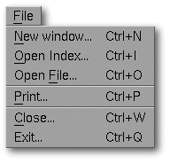
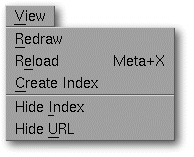
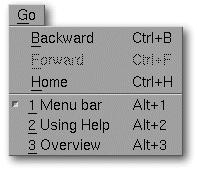
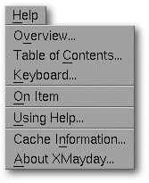

<!-- Documentation XMayday (c)1996-2000 AXENE contact axene@axene.org>
<html>

<head>
<title>Menu bar</title>
</head>

<body BGCOLOR="#FFFFFF" BACKGROUND="Images/back.gif" TEXT="#000000">

<p ALIGN="right"> </p>

<p><br>
<br>
The Menu Bar of every XMayday window accesses the following pulldown menus: <br>
<br>
</p>

<hr>

<p><br>
</p>

<p><a NAME="file"></a> </p>

<p ALIGN="right"> </p>

<p align="center"><br>
The <i>&quot;File&quot;</i> pulldown menu accesses the usual function options. <br>
<br>
 <br>
<small><i>Screen shot: File pulldown menu. </i></small></p>

<p><br>
</p>

<h3>The File menu contains the following items:</h3>

<ul>
  <li><a NAME="new_menu_entry"><i>&quot;New Window&quot;</i> <b>opens a new XMayday window</b>.
    The new window is opened with the same HTML index page and browsing tools as the original
    XMayday window. </a><br>
    &nbsp;</li>
  <li><a NAME="open_index_menu_entry"><i>&quot;Open Index&quot;</i> <b>opens the HTML index
    page</b> by calling up the '</a><a HREF="Box_File_Selectors.html#fs_open_index">Open Index</a>'
    file selector to select the file containing the index page. If the <a HREF="Main_Interface.html">General Interface</a>'s <a HREF="Main_Interface.html#index_section">index section</a> is closed, choosing an index
    page will open it automatically. <br>
    &nbsp;</li>
  <li><a NAME="open_file_menu_entry"><i>&quot;Open file&quot;</i> <b>opens the browser's HTML
    page</b> by calling up the '</a><a HREF="Box_File_Selectors.html#fs_open_file">Open file</a>'
    in order to select the file containing the page to be displayed. <br>
    &nbsp;</li>
  <li><a NAME="print_menu_entry"><i>&quot;Print...&quot;</i> <b>prints the current browser
    page</b>; it calls up the '</a><a HREF="Box_Print.html">Print</a>' dialog box. <br>
    &nbsp;</li>
  <li><a NAME="close_menu_entry"><i>&quot;Close...&quot;</i> <b>closes the current XMayday
    window</b>. </a><br>
    &nbsp;</li>
  <li><a NAME="quit_menu_entry"><i>&quot;Quit...&quot;</i> <b>quits the XMayday application</b>.
    All open XMayday windows will be closed and a dialog box will appear to ask for
    confirmation before quitting. </a></li>
</ul>

<p><br>
</p>

<hr>

<p><a NAME="view"></a></p>

<p ALIGN="right"> </p>

<p align="center"><br>
<br>
The <i>&quot;View&quot;</i> pulldown menu changes the display in the current XMayday
window. <br>
<br>
 <br>
<small><i>Screen shot: View pulldown menu. </i></small></p>

<p><br>
</p>

<h3>The View menu contains the following items:</h3>

<ul>
  <li><a NAME="refresh_menu_entry"><i>&quot;Redraw&quot;</i> tidies the index and browser
    pages. This menu option tidies their display should the view of the Index and browser
    pages be altered. </a><br>
    &nbsp;</li>
  <li><a NAME="reload_menu_entry"><i>&quot;Reload&quot;</i> <b>reloads the index and browser
    pages</b> by re-reading the displayed page's source file. </a><br>
    &nbsp;</li>
  <li><a NAME="transfert_menu_entry"><i>&quot;Create index&quot;</i> <b>creates the index page
    from the browser page</b>. The browser page will appear in the new Index page section. </a><br>
    &nbsp;</li>
  <li><a NAME="view_index_menu_entry"><i>&quot;Display/Hide index&quot;</i> <b>displays or
    hides the Index</b>, if one exists. </a><br>
    &nbsp;</li>
  <li><a NAME="view_url_menu_entry"><i>&quot;Display/Hide URL&quot;</i> <b>displays or hides
    the information bar</b> of the current XMayday window. </a></li>
</ul>

<p><br>
</p>

<hr>

<p><a NAME="goto"></a></p>

<p ALIGN="right"> </p>

<p align="center"><br>
The <i>&quot;Go&quot;</i> pulldown menu accesses a saved HTML page from the log in either
a relative or absolute fashion. Each XMayday window keeps a log of successively read
browser pages. <br>
<br>
 <br>
<small><i>Screen shot: Go pulldown menu. </i></small></p>

<p><br>
</p>

<h3>The Go menu contains the following items:</h3>

<ul>
  <li><a NAME="prev_menu_entry"><i>&quot;Backward&quot;</i> <b>displays the preceding HTML
    page from the log</b>. It goes to the page displayed and read just before the current
    browser page. </a><br>
    &nbsp;</li>
  <li><a NAME="next_menu_entry"><i>&quot;Forward&quot;</i> <b>displays the following HTML page
    from the log</b>. It goes to the page displayed and read just after the current browser
    page. </a><br>
    &nbsp;</li>
  <li><a NAME="home_menu_entry"><i>&quot;Home&quot;</i> <b>displays the first HTML page kept
    in the log</b>. </a><br>
    &nbsp;</li>
  <li><a NAME="history_menu_entry">The following entries show the titles of the last 20 pages
    kept in the <b>log</b>. The browser's currently displayed HTML page is signaled in the
    pulldown menu by a marker before its page title. Selecting an entry from the log displays
    the corresponding HTML page directly. </a></li>
</ul>

<p><br>
</p>

<hr>

<p><a NAME="help"></a></p>

<p ALIGN="right"> </p>

<p align="center"><br>
The <i>&quot;Help&quot;</i> pulldown menu accesses XMayday's help section. <br>
<br>
 <br>
<small><i>Screen shot: Help pulldown menu. </i></small></p>

<p><br>
</p>

<h3>The Help menu contains the following items:</h3>

<ul>
  <li><a NAME="overview_menu_entry"><i>&quot;Overview&quot;</i> entry provides an </a><a HREF="Overview.html">overview</a> on how to use XMayday. <br>
    &nbsp;</li>
  <li><a NAME="table_of_contents_menu_entry"><i>&quot;Table of Contents...&quot;</i> accesses
    Help's </a><a HREF="index.html">Table of Contents</a>. <br>
    &nbsp;</li>
  <li><a NAME="keyboard_menu_entry"><i>&quot;Keyboard...&quot;</i> provides help on general
    keyboard usage, specifically on </a><a HREF="Keyboard.html#shortcuts">shortcuts</a> keys. <br>
    &nbsp;</li>
  <li><a NAME="help_on_item_menu_entry"><i>&quot;Help on Item&quot;</i> provides help when
    clicking on a specific part of the interface. </a><br>
    &nbsp;</li>
  <li><a NAME="using_help_menu_entry"><i>&quot;Using Help&quot;</i> provides information on
    the different ways to obtain </a><a HREF="Help_Usage.html">help</a>. <br>
    &nbsp;</li>
  <li><a NAME="cache_menu_entry"><i>&quot;Cache Information...&quot;</i> <b>modifies Image
    Cache parameters</b> by calling up the '</a><a HREF="Box_Image_Cache.html">Image Cache
    Information</a>' dialog box. <br>
    &nbsp;</li>
  <li><a NAME="about_xmayday_menu_entry"><i>&quot;About XMayday&quot;</i> opens a box
    containing information on the current version of XMayday and addresses to </a><a HREF="About.html">contact Axene</a>. </li>
</ul>

<p><br>
</p>

<hr>

<p ALIGN="right"></p>
</body>
</html>
